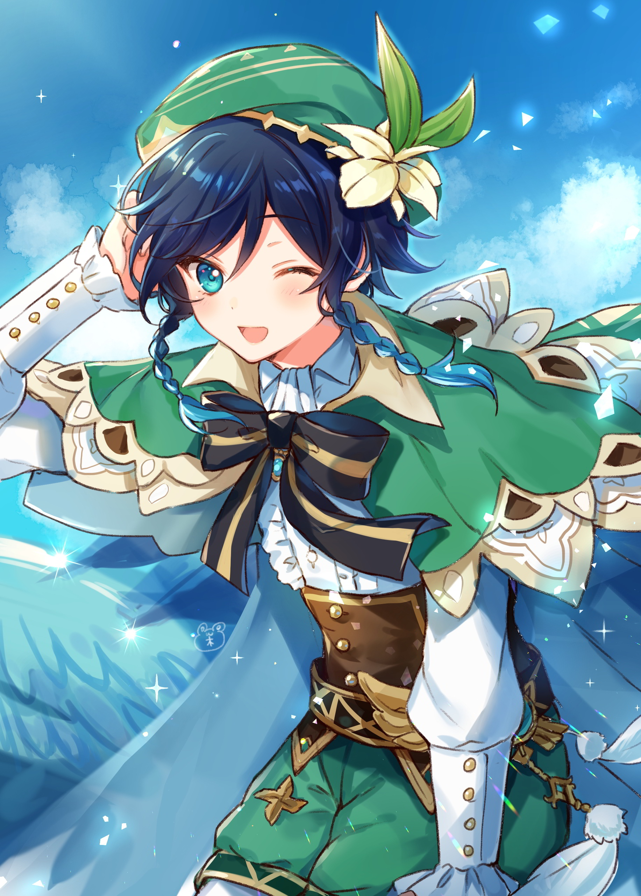

Venti

Venti es un personaje jugable en Genshin Impact. Es un bardo de espíritu libre y amante del vino en Mondstadt y el actual recipiente mortal de Barbatos, el Arconte Anemo.
Personalidad
Venti tiene una actitud bastante traviesa y le gustan las rimas en sus discursos, pero si le dicen que se detenga, se detendrá inmediatamente. Él ve un cierto valor en la música hasta el punto en que nombra su lira, diciendo que "todo ser merece un nombre para ser invocado y tejido en una canción". También es bastante audaz, mostrado muchas veces tanto en el manga como en el juego, sin temer insultar o ignorar a los supuestamente poderosos.
Venti disfruta deambular por Mondstadt tocando canciones para su gente, la mayoría de los cuales desconocen su verdadera identidad como el Arconte Anemo. Es muy querido por su talento musical, habiendo ganado tres veces el título de "El bardo más popular de Mondstadt". Venti también es un ávido bebedor de bebidas alcohólicas, como el Vino de Diente de León y tiene una alta tolerancia al alcohol. También está bien con la sidra de manzana. Sin embargo, para su desdén, la forma que adopta hace que la mayoría de los bartenders lo vean como un menor de edad, pero él evita esto diciéndole a la gente que le traigan bebidas a cambio de sus actuaciones. Por razones desconocidas, es mortalmente alérgico a los gatos y no actuará a menos que esté seguro de que no hay ninguno cerca.

Apariencia
Venti tiene piel clara, ojos color aguamarina y complexión delgada. Tiene el cabello azul oscuro que bordea el negro, con trenzas gemelas cortas que se desvanecen en un color agua que brilla en cian brillante cuando lanza magia. Viste una blusa blanca con volantes con una sección media de cuero similar a un corsé, junto con pantalones cortos verde azulado con bordados dorados y una capa verde azulado a juego unida por un lazo azul profundo y dorado. Venti también usa medias blancas con 3 formas de diamantes dorados a lo largo de cada pierna y un sombrero parecido a una boina con una Cecilia, que es su flor favorita. Lleva una lira de madera con cuerdas azules imbuidas del poder de Anemo.